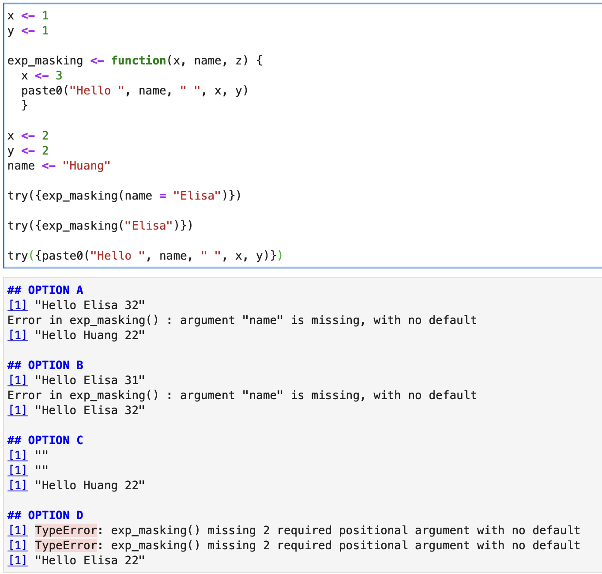

Lecture 6: Functions and testing#
Lecture learning objectives:#
By then end of this lecture & worksheet 6, students should be able to:
In R, define and use a named function that accepts parameters and returns values
Describe lazy evaluation and
...(variable arguments) and how it affects functions in Rexplain the importance of scoping and environments in R as they relate to functions
Use
testthatto formulate a test case to prove a function design specificationUse test-driven development principles to define a function that accepts parameters, returns values and passes all tests
Handle errors gracefully via exception handling
Use
roxygen2friendly function documentation to describe parameters, return values, description and example(s).Write comments within a function to improve readability
Evaluate the readability, complexity and performance of a function
Source and use functions stored as R code in another file, as well as those in R packages/libraries
Describe what R packages/libraries are, as well as explain when and why they are useful
options(repr.matrix.max.rows = 10)
Clicker 1#
Which of the following code is not correct for finding sum of all elements in col_1. (my_t <- tibble(col_1 = c(1.43, 2.21, 3.43, NA), col_2 = c(2.6, 3.4, 5, 6.3))
col_1 |
col_2 |
|---|---|
1.43 |
2.6 |
2.21 |
3.4 |
3.43 |
5.0 |
NA |
6.3 |
A) my_t |> summarise(sum_val = sum(col_1, na.rm = TRUE))
B) my_t |> summarize(sum_val = sum(col_1, na.rm = TRUE))
C) my_t |> summarise(sum_val = sum(col_1, is.na = TRUE))
D) my_t |> drop_na(col_1) |> summarise(sum_val = sum(col_1))
Answer: C
There is no argument called is.na that we can pass to sum function
Functions#
Defining functions in R:#
Use
variable <- function(…arguments…) { …body… }to create a function and give it a name
Example:
add <- function(x, y) {
x + y
}
add(5, 10)
As in Python, functions in R are objects. This is referred to as “first-class functions”.
The last line of the function returns a value, to return a value early use the special word
return
add <- function(x, y) {
if (!is.numeric(x) | !is.numeric(y)) {
return(NA)
}
x + y
}
add(5, "a")
Note: you probably want to throw an error here instead of return NA, this example was purely for illustrating early returns
Default function arguments#
Same as in Python!
repeat_string <- function(x, n = 2) {
repeated <- ""
for (i in seq_along(1:n)) {
repeated <- paste0(repeated, x)
}
repeated
}
repeat_string("MDS")
Optional - Advanced#
Extra arguments via ...#
If we want our function to be able to take extra arguments that we don’t specify, we must explicitly convert ... to a list:
add <- function(x, y, ...) {
total = x + y
for (value in list(...)) {
total <- total + value
}
total
print(list(...))
}
add(1, 3, 5, 6)
[[1]]
[1] 5
[[2]]
[1] 6
Lexical scoping in R#
R’s lexical scoping follows several rules, we will cover the following 3:
Name masking
Dynamic lookup
A fresh start
Name masking#
Names defined inside a function mask names defined outside a function
If a name isn’t defined inside a function, R looks one level up (and then all the way up into the global environment and even loaded packages!)
Talk through the following code with your neighbour and predict the output, then let’s confirm the result by running the code.
x <- 1
g04 <- function() {
y <- 2
i <- function() {
z <- 3
c(x, y, z)
}
i()
}
g04()
- 1
- 2
- 3
Dynamic lookup#
R looks for values when the function is run, not when the function is created.
This means that the output of a function can differ depending on the objects outside the function’s environment.
Talk through the following code with your neighbour and predict the output, then let’s confirm the result by running the code.
g12 <- function() x + 1
x <- 15
g12()
x <- 20
g12()
A fresh start#
Every time a function is called a new environment is created to host its execution.
This means that a function has no way to tell what happened the last time it was run; each invocation is completely independent.
Talk through the following code with your neighbour and predict the output, then let’s confirm the result by running the code.
g11 <- function() {
if (!exists("a")) {
a <- 1
} else {
a <- a + 1
}
a
}
g11()
g11()
g11()
Lazy evaluation#
In R, function arguments are lazily evaluated: they’re only evaluated if accessed.
Knowing that, now consider the add_one function written in both R and Python below:
# R code (this would work)
add_one <- function(x, y) {
x <- x + 1
return(x)
}
# Python code (this would not work)
def add_one(x, y):
x = x + 1
return x
Why will the above add_one function will work in R, but the equivalent version of the function in python would break?
Python evaluates the function arguments before it evaluates the function and because it doesn’t know what
yis, it will break even though it is not used in the function.R performs lazy evaluation, meaning it delays the evaluation of the function arguments until its value is needed within/inside the function. Since
yis never referenced inside the function, R doesn’t complain, or even notice it.
add_one in R#
add_one <- function(x, y) {
x <- x + 1
return(x)
}
This works:
add_one(2, 1)
3
and so does this:
add_one(2)
3
add_one in Python#
def add_one(x, y):
x = x + 1
return x`
This works:
add_one(2, 1)
3
This does not:
add_one(2)
---------------------------------------------------------------------------
TypeError Traceback (most recent call last)
<ipython-input-5-f2e542671748> in <module>
----> 1 add_one(2)
TypeError: add_one() missing 1 required positional argument: 'y'
The power of lazy evaluation#
Let’s you have easy to use interactive code like this:
head(mtcars, n = 2)
| mpg | cyl | disp | hp | drat | wt | qsec | vs | am | gear | carb | |
|---|---|---|---|---|---|---|---|---|---|---|---|
| <dbl> | <dbl> | <dbl> | <dbl> | <dbl> | <dbl> | <dbl> | <dbl> | <dbl> | <dbl> | <dbl> | |
| Mazda RX4 | 21 | 6 | 160 | 110 | 3.9 | 2.620 | 16.46 | 0 | 1 | 4 | 4 |
| Mazda RX4 Wag | 21 | 6 | 160 | 110 | 3.9 | 2.875 | 17.02 | 0 | 1 | 4 | 4 |
dplyr::select(mtcars, mpg, cyl, hp, qsec)
| mpg | cyl | hp | qsec | |
|---|---|---|---|---|
| <dbl> | <dbl> | <dbl> | <dbl> | |
| Mazda RX4 | 21.0 | 6 | 110 | 16.46 |
| Mazda RX4 Wag | 21.0 | 6 | 110 | 17.02 |
| Datsun 710 | 22.8 | 4 | 93 | 18.61 |
| Hornet 4 Drive | 21.4 | 6 | 110 | 19.44 |
| Hornet Sportabout | 18.7 | 8 | 175 | 17.02 |
| ⋮ | ⋮ | ⋮ | ⋮ | ⋮ |
| Lotus Europa | 30.4 | 4 | 113 | 16.9 |
| Ford Pantera L | 15.8 | 8 | 264 | 14.5 |
| Ferrari Dino | 19.7 | 6 | 175 | 15.5 |
| Maserati Bora | 15.0 | 8 | 335 | 14.6 |
| Volvo 142E | 21.4 | 4 | 109 | 18.6 |
Notes:
There’s more than just lazy evaluation happening in the code above, but lazy evaluation is part of it.
package::function()is a way to use a function from an R package without loading the entire library.
Clicker 2#

What will be the output of following
{kind=link}
Answer: A Clear concepts on
Name masking
Dynamic lookup
A fresh start
Lazy evaluation
return statement
Positional & keyword arguments
Why we use try
Writing tests with {testthat}#
Industry standard tool for writing tests in R is the {testthat} package.
To use an R package, we typically load the package into R using the
libraryfunction:
library(testthat)
How to write a test with {testthat}#
test_that("Message to print if test fails", expect_*(...))
Often our test_that function calls are longer than 80 characters, so we use { to split the code across multiple lines, for example:
x <- c(3.5, 3.5, 3.5)
y <- c(3.5, 3.5, 3.5)
test_that("x and y should contain the same values", {
expect_equal(x, y)
})
Test passed 🌈
Are you starting to see a pattern with { yet…
Common expect_* statements for use with test_that#
Is the object equal to a value?#
expect_identical- test two objects for being exactly equalexpect_equal- compare R objects x and y testing ‘near equality’ (can set a tolerance)expect_equivalent- compare R objects x and y testing ‘near equality’ (can set a tolerance) and does not assess attributes
Does code produce an output/message/warning/error?#
expect_error- tests if an expression throws an errorexpect_warning- tests whether an expression outputs a warningexpect_output- tests that print output matches a specified value
Is the object true/false?#
These are fall-back expectations that you can use when none of the other more specific expectations apply. The disadvantage is that you may get a less informative error message.
expect_true- tests if the object returnsTRUEexpect_false- tests if the object returnsFALSE
Tolerance and tests:#
Below we add a tolerance arguement to the expect_equal statement such that the observed difference between these very similar vectors doesn’t cause the test to fail.
x <- c(3.5, 3.5, 3.5)
y <- c(3.5, 3.5, 3.49999)
test_that("x and y should contain the same values", {
expect_equal(x, y)
})
Error: Test failed: 'x and y should contain the same values'
* <text>:4: `x` not equal to `y`.
1/3 mismatches
[3] 3.5 - 3.5 == 1e-05
Traceback:
1. test_that("x and y should contain the same values", {
. expect_equal(x, y)
. })
2. test_code(desc, code, env = parent.frame())
3. get_reporter()$end_test(context = get_reporter()$.context, test = test)
4. stop(message, call. = FALSE)
x <- c(3.5, 3.5, 3.5)
y <- c(3.5, 3.5, 3.49999)
test_that("x and y should contain the same values", {
expect_equal(x, y, tolerance = 0.00001)
})
Test passed 🎊
Unit test example#
celsius_to_fahr <- function(temp) {
(temp * (9 / 5)) + 32
}
test_that("Temperature should be the same in Celcius and Fahrenheit at -40", {
expect_identical(celsius_to_fahr(-40), -40)
})
test_that("Room temperature should be about 23 degrees in Celcius and 73 degrees Fahrenheit", {
expect_equal(celsius_to_fahr(23), 73, tolerance = 1)
})
Test passed 🌈
Test passed 🥇
Test-driven development (TDD) review#
Write your tests first (that call the function you haven’t yet written), based on edge cases you expect or can calculate by hand
If necessary, create some “helper” data to test your function with (this might be done in conjunction with step 1)
Write your function to make the tests pass (in this process you might think of more tests that you want to add)
Toy example of how TDD can be helpful#
Let’s create a function called fahr_to_celsius that converts temperatures from Fahrenheit to Celsius.
First we’ll write the tests (which will fail):
test_fahr_to_celsius <- function() {
test_that("Temperature should be the same in Celcius and Fahrenheit at -40", {
expect_identical(fahr_to_celsius(-40), -40)
})
test_that("Room temperature should be about 73 degrees Fahrenheit and 23 degrees in Celcius", {
expect_equal(fahr_to_celsius(73), 23, tolerance = 1)
})
}
Then we write our function to pass the tests:
fahr_to_celsius <- function(temp) {
(temp + 32) * 5/9
}
Then we call our tests to check it:
test_fahr_to_celsius()
Error: Test failed: 'Temperature should be the same in Celcius and Fahrenheit at -40'
* <text>:3: fahr_to_celsius(-40) not identical to -40.
1/1 mismatches
[1] -4.44 - -40 == 35.6
Traceback:
1. test_fahr_to_celsius()
2. test_that("Temperature should be the same in Celcius and Fahrenheit at -40",
. {
. expect_identical(fahr_to_celsius(-40), -40)
. }) # at line 2-4 of file <text>
3. test_code(desc, code, env = parent.frame())
4. get_reporter()$end_test(context = get_reporter()$.context, test = test)
5. stop(message, call. = FALSE)
We found an error - so we go back and edit our function:
fahr_to_celsius <- function(temp) {
(temp - 32) * 5/9
}
And then call our tests again to see if we got it right!
test_fahr_to_celsius()
Test passed 🥇
Test passed 🎊
No message from the test, means we got it this time!

Exception handling#
How to check type and throw an error if not the expected type:
if (!is.numeric(c(1, 2, "c")))
stop("Cannot compute of a vector of characters.")
Error in eval(expr, envir, enclos): Cannot compute of a vector of characters.
Traceback:
1. stop("Cannot compute of a vector of characters.")
Example of defensive programming at the beginning of a function:
fahr_to_celsius <- function(temp) {
if(!is.numeric(temp)){
stop("Cannot calculate temperature in Farenheit for non-numerical values")
}
(temp - 32) * 5/9
}
fahr_to_celsius("thirty")
Error in fahr_to_celsius("thirty"): Cannot calculate temperature in Farenheit for non-numerical values
Traceback:
1. fahr_to_celsius("thirty")
2. stop("Cannot calculate temperature in Farenheit for non-numerical values") # at line 3 of file <text>
If you wanted to issue a warning instead of an error, you could use warning in place of stop in the example above. However, in most cases it is better practice to throw an error than to print a warning…
We can test our exceptions using test_that:#
test_that("Non-numeric values for temp should throw an error", {
expect_error(fahr_to_celsius("thirty"))
expect_error(fahr_to_celsius(list(4)))
})
Test passed 😸
try in R#
Similar to Python, R has a try function to attempt to run code, and continue running subsequent code even if code in the try block does not work:
try({
# some code
# that can be
# split across several
# lines
})
# code to continue even if error in code
# in try code block above
This code normally results in an error that stops following code from running:
x <- data.frame(col1 = c(1, 2, 3, 2, 1),
col2 = c(0, 1, 0, 0 , 1))
x[3]
dim(x)
Error in `[.data.frame`(x, 3): undefined columns selected
Traceback:
1. x[3]
2. `[.data.frame`(x, 3)
3. stop("undefined columns selected")
Try let’s the code following the error run:
try({x <- data.frame(col1 = c(1, 2, 3, 2, 1),
col2 = c(0, 1, 0, 0 , 1))
x[3]
})
dim(x)
Error in `[.data.frame`(x, 3) : undefined columns selected
- 5
- 2
Sensibly (IMHO) try has a default of silent=FALSE, which you can change if you find good reason too.
{roxygen2} friendly function documentation#
#' Converts temperatures from Fahrenheit to Celsius.
#'
#' @param temp a vector of temperatures in Fahrenheit
#'
#' @return a vector of temperatures in Celsius
#'
#' @examples
#' fahr_to_celsius(-20)
fahr_to_celsius <- function(temp) {
(temp - 32) * 5/9
}
Why roxygen2 documentation? If you document your functions like this, when you create an R package to share them they will be set up to have the fancy documentation that we get using ?function_name.
RStudio has template for roxygen2 documentation#

Reading in functions from an R script#
Usually the step before packaging your code, is having some functions in another script that you want to read into your analysis. We use the source function to do this:
source("src/kelvin_to_celsius.R")
Once you do this, you have access to all functions contained within that script:
kelvin_to_celsius(273.15)
Note - this is how the test_* functions are brought into your Jupyter notebooks for the autograding part of your lab3 homework.
Introduction to R packages#
source("script_with_functions.R")is useful, but when you start using these functions in different projects you need to keep copying the script, or having overly specific paths…
The next step is packaging your R code so that it can be installed and then used across multiple projects on your (and others) machines without directly pointing to where the code is stored, but instead accessed using the
libraryfunction.
You will learn how to do this in Collaborative Software Development (term 2), but for now, let’s tour a simple R package to get a better understanding of what they are: https://github.com/ttimbers/convertemp
Install the convertemp R package:#
In RStudio, type: devtools::install_github("ttimbers/convertemp")
library(convertempr)
Attaching package: ‘convertempr’
The following objects are masked _by_ ‘.GlobalEnv’:
celsius_to_fahr, fahr_to_celsius, kelvin_to_celsius
?celsius_to_kelvin
celsius_to_kelvin(0)
Packages and environments#
Each package attached by library() becomes one of the parents of the global environment
The immediate parent of the global environment is the last package you attached, the parent of that package is the second to last package you attached, …

Source: Advanced R by Hadley Wickham
When you attach another package with library(), the parent environment of the global environment changes:

Source: Advanced R by Hadley Wickham
What did we learn today?#
How to write and test functions in R
How to handle exceptions
How to source functions from other files
A little bit about what R packages are
Attribution:#
Advanced R by Hadley Wickham
The Tidynomicon by Greg Wilson